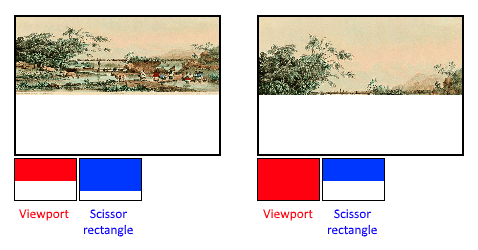

Fixed functions
The older graphics APIs provided the default state for most of the stages of the graphics pipeline. In Vulkan, you have to be explicit about most pipeline states as it’ll be baked into an immutable pipeline state object. In this chapter, we’ll fill in all the structures to configure these fixed-function operations.
Dynamic state
While most of the pipeline state needs to be baked into the pipeline state,
a limited amount of the state can actually be changed without recreating the
pipeline at draw time. Examples are the size of the viewport, line width
and blend constants. If you want to use dynamic state and keep these properties out,
then you’ll have to fill in a vk::PipelineDynamicStateCreateInfo structure like this:
std::vector<vk::DynamicState> dynamicStates = {vk::DynamicState::eViewport, vk::DynamicState::eScissor};
vk::PipelineDynamicStateCreateInfo dynamicState{.dynamicStateCount = static_cast<uint32_t>(dynamicStates.size()), .pDynamicStates = dynamicStates.data()};This will cause the configuration of these values to be ignored, and you will be able (and required) to specify the data at drawing time. This results in a more flexible setup and is widespread for things like viewport and scissor state, which would result in a more complex setup when being baked into the pipeline state.
Vertex input
The vk::PipelineVertexInputStateCreateInfo structure describes the format of the vertex data that will be passed to the vertex shader.
It describes this in roughly two ways:
-
Bindings: spacing between data and whether the data is per-vertex or per-instance (see instancing)
-
Attribute descriptions: type of the attributes passed to the vertex shader, which binding to load them from and at which offset
Because we’re hard coding the vertex data directly in the vertex shader, we’ll fill in this structure to specify that there is no vertex data to load for now. We’ll get back to it in the vertex buffer chapter.
vk::PipelineVertexInputStateCreateInfo vertexInputInfo;The pVertexBindingDescriptions and pVertexAttributeDescriptions members point to an array of structs that describe the aforementioned details for loading vertex data.
Add this structure to the createGraphicsPipeline function right after the shaderStages array.
Input assembly
The vk::PipelineInputAssemblyStateCreateInfo struct describes two things: what kind of geometry will be drawn from the vertices and if primitive restart should be enabled.
The former is specified in the topology member and can have values like:
-
vk::PrimitiveTopology::ePointList: points from vertices -
vk::PrimitiveTopology::eLineList: line from every two vertices without reuse -
vk::PrimitiveTopology::eLineStrip: the end vertex of every line is used as start vertex for the next line -
vk::PrimitiveTopology::eTriangleList: triangle from every three vertices without reuse -
vk::PrimitiveTopology::eTriangleStrip: the second and third vertex of every triangle is used as first two vertices of the next triangle
Normally, the vertices are loaded from the vertex buffer by index in sequential order, but with an element buffer you can specify the indices to use yourself.
This allows you to perform optimizations like reusing vertices.
If you set the primitiveRestartEnable member to vk::True, then it’s possible to break up lines and triangles in the Strip topology modes by using a special index of 0xFFFF or 0xFFFFFFFF.
We intend to draw triangles throughout this tutorial, so we’ll stick to the following data for the structure:
vk::PipelineInputAssemblyStateCreateInfo inputAssembly{.topology = vk::PrimitiveTopology::eTriangleList};Viewports and scissors
A viewport basically describes the region of the framebuffer that the output will be rendered to.
This will almost always be (0, 0) to (width, height) and in this tutorial that will also be the case.
vk::Viewport viewport{0.0f, 0.0f, static_cast<float>(swapChainExtent.width), static_cast<float>(swapChainExtent.height), 0.0f, 1.0f};Remember that the size of the swap chain and its images may differ from the WIDTH and HEIGHT of the window.
The swap chain images will be used as framebuffers later on, so we should stick to their size.
The minDepth and maxDepth values specify the range of depth values to use for the framebuffer.
These values must be within the [0.0f, 1.0f] range, but minDepth may be higher than maxDepth.
If you aren’t doing anything special, then you should stick to the standard values of 0.0f and 1.0f.
While viewports define the transformation from the image to the framebuffer, scissor rectangles define in which region pixels will actually be stored. The rasterizer will discard any pixels outside the scissored rectangles. They function like a filter rather than a transformation. The difference is illustrated below. Note that the left scissored rectangle is just one of the many possibilities that would result in that image, as long as it’s larger than the viewport.

So if we wanted to draw to the entire framebuffer, we would specify a scissor rectangle that covers it entirely:
vk::Rect2D scissor{vk::Offset2D{ 0, 0 }, swapChainExtent};Viewport(s) and scissor rectangle(s) can either be specified as a static part of the pipeline or as a dynamic state set in the command buffer. While the former is more in line with the other states, it’s often convenient to make viewport and scissor state dynamic as it gives you a lot more flexibility. This is widespread and all implementations can handle this dynamic state without a performance penalty.
When opting for dynamic viewport(s) and scissor rectangle(s), you need to enable the respective dynamic states for the pipeline:
std::vector<vk::DynamicState> dynamicStates = {vk::DynamicState::eViewport, vk::DynamicState::eScissor};
vk::PipelineDynamicStateCreateInfo dynamicState{.dynamicStateCount = static_cast<uint32_t>(dynamicStates.size()), .pDynamicStates = dynamicStates.data()};And then you only need to specify their count at pipeline creation time:
vk::PipelineViewportStateCreateInfo viewportState{.viewportCount = 1, .scissorCount = 1};The actual viewport(s) and scissor rectangle(s) will then later be set up at drawing time.
With dynamic state, it’s even possible to specify different viewports and or scissor rectangles within a single command buffer.
Without dynamic state, the viewport and scissor rectangle need to be set in the pipeline using the vk::PipelineViewportStateCreateInfo struct.
This makes the viewport and scissor rectangle for this pipeline immutable.
Any changes required to these values would require a new pipeline to be created with the new values.
vk::PipelineViewportStateCreateInfo viewportState{.viewportCount = 1, .pViewports = &viewport, .scissorCount = 1, .pScissors = &scissor};Independent of how you set them, it’s possible to use multiple viewports and scissor rectangles on some graphics cards, so the structure members reference an array of them. Using multiple requires enabling a GPU feature (see logical device creation).
Rasterizer
The rasterizer takes the geometry shaped by the vertices from the vertex shader and turns it into fragments to be colored by the fragment shader.
It also performs depth testing, face culling and the scissor test, and it can be configured to output fragments that fill entire polygons or just the edges (wireframe rendering).
All this is configured using the vk::PipelineRasterizationStateCreateInfo structure.
vk::PipelineRasterizationStateCreateInfo rasterizer{.depthClampEnable = vk::False,
.rasterizerDiscardEnable = vk::False,
.polygonMode = vk::PolygonMode::eFill,
.cullMode = vk::CullModeFlagBits::eBack,
.frontFace = vk::FrontFace::eClockwise,
.depthBiasEnable = vk::False,
.lineWidth = 1.0f};If depthClampEnable is set to vk::True, then fragments that are beyond
the near and far planes are clamped to them as opposed to discarding them.
This is useful in some special cases like shadow maps.
Using this requires enabling a GPU feature.
If rasterizerDiscardEnable is set to vk::True, then geometry never passes through the rasterizer stage.
This basically disables any output to the framebuffer.
The polygonMode determines how fragments are generated for geometry.
The following modes are available:
-
vk::PolygonMode::eFill: fill the area of the polygon with fragments -
vk::PolygonMode::eLine: polygon edges are drawn as lines -
vk::PolygonMode::ePoint: polygon vertices are drawn as points
Using any mode other than fill requires enabling a GPU feature.
The cullMode variable determines the type of face culling to use.
You can disable culling, cull the front faces, cull the back faces or both.
The frontFace variable specifies the vertex order for the faces to be considered front-facing and can be clockwise or counterclockwise.
The rasterizer can alter the depth values by adding a constant value or biasing them based on a fragment’s slope.
This is sometimes used for shadow mapping, but we won’t be using it.
Just set depthBiasEnable to vk::False.
The lineWidth member is straightforward, it describes the thickness of lines in terms of number of fragments.
The maximum line width that is supported depends on the hardware and any line thicker than 1.0f requires you to enable the wideLines GPU feature.
Multisampling
The vk::PipelineMultisampleStateCreateInfo struct configures multisampling, which is one of the ways to perform antialiasing.
It works by combining the fragment shader results of multiple polygons that rasterize to the same pixel.
This mainly occurs along edges, which is also where the most noticeable aliasing artifacts occur.
Because it doesn’t need to run the fragment shader multiple times if only one polygon maps to a pixel, it is significantly less expensive than simply rendering to a higher resolution and then downscaling.
Enabling it requires enabling a GPU feature.
vk::PipelineMultisampleStateCreateInfo multisampling{.rasterizationSamples = vk::SampleCountFlagBits::e1, .sampleShadingEnable = vk::False};We’ll revisit multisampling in later chapter, for now let’s keep it disabled.
Depth and stencil testing
If you are using a depth and/or stencil buffer, then you also need to configure the depth and stencil tests using vk::PipelineDepthStencilStateCreateInfo.
We don’t have one right now, so we can simply pass a nullptr instead of a pointer to such a struct.
We’ll get back to it in the depth buffering chapter.
Color blending
After a fragment shader has returned a color, it needs to be combined with the color that is already in the framebuffer. This transformation is known as color blending, and there are two ways to do it:
-
Mix the old and new value to produce a final color
-
Combine the old and new value using a bitwise operation
There are two types of structs to configure color blending.
The first struct, vk::PipelineColorBlendAttachmentState contains the configuration per attached framebuffer and the second struct, vk::PipelineColorBlendStateCreateInfo contains the global color blending settings.
In our case, we only have one framebuffer:
vk::PipelineColorBlendAttachmentState colorBlendAttachment{
.blendEnable = vk::False,
.colorWriteMask = vk::ColorComponentFlagBits::eR | vk::ColorComponentFlagBits::eG | vk::ColorComponentFlagBits::eB | vk::ColorComponentFlagBits::eA};This per-framebuffer struct allows you to configure the first way of color blending. The operations that will be performed are best demonstrated using the following pseudocode:
if (blendEnable) {
finalColor.rgb = (srcColorBlendFactor * newColor.rgb) <colorBlendOp> (dstColorBlendFactor * oldColor.rgb);
finalColor.a = (srcAlphaBlendFactor * newColor.a) <alphaBlendOp> (dstAlphaBlendFactor * oldColor.a);
} else {
finalColor = newColor;
}
finalColor = finalColor & colorWriteMask;If blendEnable is set to vk::False, then the new color from the fragment shader is passed through unmodified.
Otherwise, the two mixing operations are performed to compute a new color.
The resulting color is AND’d with the colorWriteMask to determine which channels are actually passed through.
The most common way to use color blending is to implement alpha blending, where we want the new color to be blended with the old color based on its opacity.
The finalColor should then be computed as follows:
finalColor.rgb = newAlpha * newColor + (1 - newAlpha) * oldColor;
finalColor.a = newAlpha.a;This can be achieved with the following parameters:
vk::PipelineColorBlendAttachmentState colorBlendAttachment{
.blendEnable = vk::True,
.srcColorBlendFactor = vk::BlendFactor::eSrcAlpha,
.dstColorBlendFactor = vk::BlendFactor::eOneMinusSrcAlpha,
.colorBlendOp = vk::BlendOp::eAdd,
.srcAlphaBlendFactor = vk::BlendFactor::eOne,
.dstAlphaBlendFactor = vk::BlendFactor::eZero,
.alphaBlendOp = vk::BlendOp::eAdd,
.colorWriteMask = vk::ColorComponentFlagBits::eR | vk::ColorComponentFlagBits::eG | vk::ColorComponentFlagBits::eB | vk::ColorComponentFlagBits::eA};You can find all the possible operations in the vk::BlendFactor and vk::BlendOp enumerations in the specification.
The second structure references the array of structures for all the framebuffers and allows you to set blend constants that you can use as blend factors in the aforementioned calculations.
vk::PipelineColorBlendStateCreateInfo colorBlending{
.logicOpEnable = vk::False, .logicOp = vk::LogicOp::eCopy, .attachmentCount = 1, .pAttachments = &colorBlendAttachment};If you want to use the second method of blending (a bitwise combination), then you should set logicOpEnable to vk::True.
The bitwise operation can then be specified in the logicOp field.
Note that this will automatically disable the first method, as if you had set blendEnable to vk::False for every attached framebuffer!
The colorWriteMask will also be used in this mode to determine which channels in the framebuffer will actually be affected.
It is also possible to disable both modes, as we’ve done here, in which case the fragment colors will be written to the framebuffer unmodified.
Pipeline layout
You can use uniform values in shaders, which are globals similar to dynamic state variables that can be changed at drawing time to alter the behavior of your shaders without having to recreate them.
They are commonly used to pass the transformation matrix to the vertex shader, or to create texture samplers in the fragment shader.
These uniform values need to be specified during pipeline creation by creating a vk::PipelineLayout object.
Even though we won’t be using them until a future chapter, we are still required to create an empty pipeline layout.
Create a class member to hold this object because we’ll refer to it from other functions at a later point in time:
vk::raii::PipelineLayout pipelineLayout = nullptr;And then create the object in the createGraphicsPipeline function:
vk::PipelineLayoutCreateInfo pipelineLayoutInfo{.setLayoutCount = 0, .pushConstantRangeCount = 0};
pipelineLayout = vk::raii::PipelineLayout(device, pipelineLayoutInfo);The structure also specifies push constants, which are another way of passing dynamic values to shaders that we may get into in a future chapter.
Conclusion
That’s it for all the fixed-function state! It’s a lot of work to set all of this up from scratch, but the advantage is that we’re now nearly fully aware of everything that is going on in the graphics pipeline! This reduces the chance of running into unexpected behavior because the default state of certain components is not what you expect.
In the next step we will set up dynamic rendering to tell the graphics pipeline what and how attachments will be used.